Elegir tatami · Iniciar un combate · Registrar el ganador · Corregir un resultado
8. Modo TV40
9. Preguntas frecuentes y problemas habituales41
10. Glosario de estados43
Cada capítulo empieza en una página nueva.
1. Qué es Zenkai Dojo
Zenkai Dojo es una aplicación web para organizar torneos de deportes de combate (viene preparada para Jiu-Jitsu Brasileño, pero admite cualquier deporte con cinturones o niveles). Cubre todo el ciclo del evento:
Antes del torneo: crear el torneo, definir divisiones de peso y grupos de edad, generar categorías, dar de alta atletas (o importarlos desde Excel) e inscribirlos.
El día del torneo: pesaje, generación de llaves, reparto de categorías en tatamis y registro de resultados desde la mesa de control.
Durante y después: el público sigue las llaves, los tatamis y el medallero en vivo (también en una pantalla grande con el modo TV), y la organización exporta todo a PDF y Excel.
1.1 Quién usa cada parte
Perfil
Qué puede hacer
Dónde entra
Público sin cuenta
Ver torneos publicados, categorías, llaves, tatamis en vivo, medallero y descargar los PDF. No puede modificar nada.
Página de inicio
Administración rol ADMIN
Control total: deportes, academias, usuarios, atletas, torneos, categorías, inscripciones, pesaje, llaves, tatamis, resultados, auditoría y exportaciones.
Entrar → Panel
Mesa de control rol TABLE
Solo registra y corrige resultados de los combates en los tatamis que tiene asignados. No ve datos personales de los atletas.
Entrar → Mesa
1.2 Cómo entrar
Abre la dirección que te haya dado la organización en cualquier navegador moderno (Chrome, Safari, Firefox o Edge) en ordenador, tablet o teléfono. No hay que instalar nada.
En una instalación local de desarrollo la aplicación está en http://localhost:5173; con Docker en http://localhost:8080.
Para administrar o ser mesa, pulsa Entrar (arriba a la derecha, o abajo en el móvil) e introduce tu correo y contraseña. Ver el capítulo 4.
Usuarios de demostración (solo en la instalación de pruebas): administración admin@zenkai.dojo / admin123; mesa del Tatami 1 mesa@zenkai.dojo / mesa123; mesa de los Tatamis 2 y 3 mesa2@zenkai.dojo / mesa123. Cámbialos antes de usar la aplicación en un torneo real.
1.3 Tema claro y oscuro
El botón con el icono de pantalla (en la cabecera o en la barra lateral) alterna entre automático (sigue el ajuste del sistema), claro y oscuro. La elección se recuerda en ese navegador.
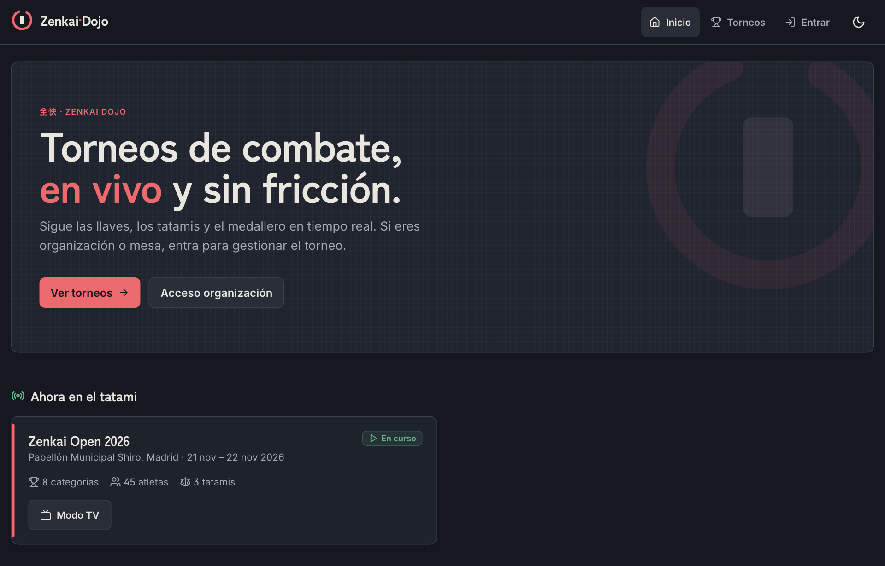
La página de inicio con el tema oscuro activado.
1.4 Uso en el móvil
Toda la aplicación se adapta al teléfono. La navegación principal pasa a una barra inferior; en administración, el menú completo se abre con el botón ☰ de la esquina superior derecha. Las pestañas de un torneo se desplazan de lado a lado (el borde derecho se desvanece para indicar que hay más).
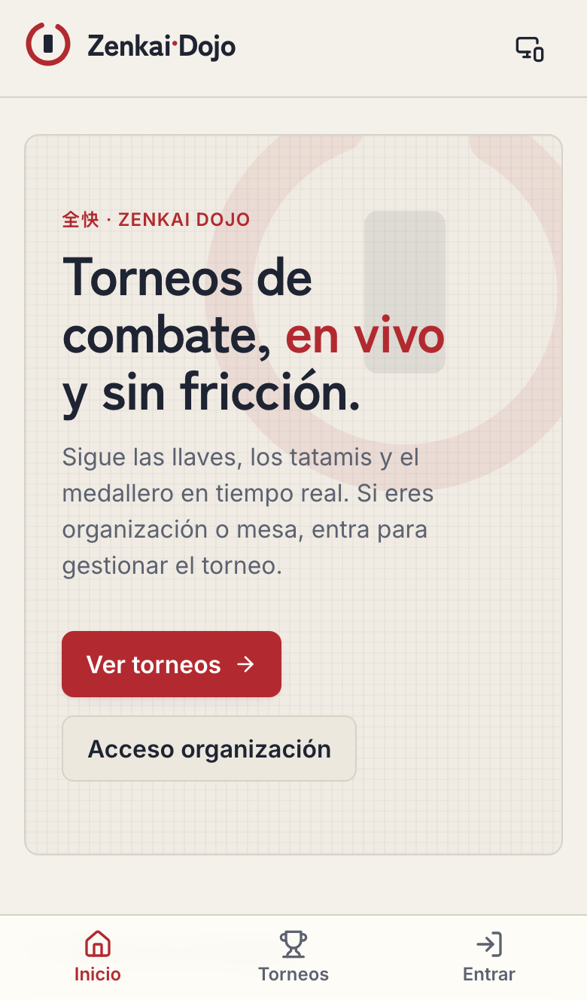
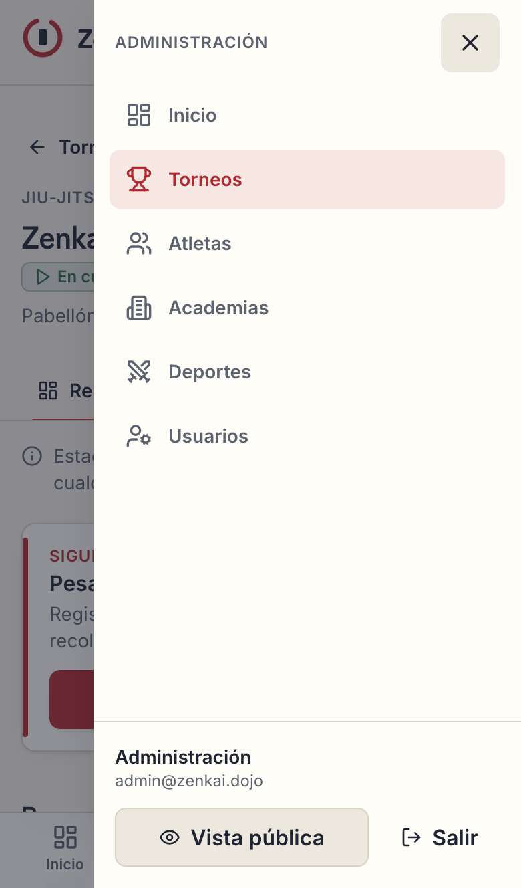
Izquierda: inicio público con la barra inferior. Derecha: menú de administración desplegado.
2. Conceptos básicos
Estos son los términos que verás por toda la aplicación. Conocerlos evita la mayoría de las dudas.
Término
Significado
Deporte
Define los métodos de victoria (sumisión, puntos, ventajas…, con los puntos que valen en los desempates), la duración por defecto del combate y la lista de cinturones o niveles con su color. Jiu-Jitsu Brasileño viene precargado.
Torneo
El evento: nombre, sede, fechas, deporte, estado y puntos del medallero (por defecto 9 / 3 / 1 para oro, plata y bronce).
División de peso
Rango de kilos (inclusivo) opcionalmente limitado a un género. Si no tiene mínimo ni máximo es Absoluto.
Grupo de edad
Rango de edades. La edad competitiva se calcula como año del torneo − año de nacimiento (convención IBJJF).
Categoría
La combinación en la que se compite: grupo de edad × género × cinturón × división de peso, con un formato de llave. El nombre se genera solo («Adulto · Masculino · Azul · Pluma») salvo que escribas otro.
Academia
Equipo o club del atleta. Es la base del medallero por academias y se usa para evitar que compañeros se crucen en la primera ronda.
Atleta
Persona registrada en el sistema (documento único, nacimiento, género, cinturón, academia). Un atleta existe una sola vez aunque participe en muchos torneos.
Inscripción
Un atleta apuntado a un torneo, con su categoría, peso declarado, resultado del pesaje y, si procede, número de siembra.
Pesaje
Registro del peso real. Puede ser Apto, Sobrepeso, Bajo peso, Sin pesar o Descalificado. Si no da el peso, el sistema propone categorías compatibles.
Llave
El cuadro de combates de una categoría. Formatos: eliminación simple (dos bronces: los perdedores de semifinal), eliminación simple + bronce (combate por el tercer puesto), eliminación doble (llave principal + repechaje + gran final) y todos contra todos (round robin con tabla de clasificación).
BYE
Hueco libre cuando el número de atletas no es potencia de dos: el atleta pasa de ronda sin combatir. Se reparte a los mejores sembrados.
Siembra
Número que ordena a los favoritos (1 = mejor) para separarlos en la llave. Es opcional.
Tatami
Área de combate. Cada categoría se programa en un tatami con una hora; cada tatami tiene su cola de combates numerada (#1, #2…).
Mesa de control
Usuario que opera un tatami: inicia combates y registra ganadores. Puede corregir un resultado indicando el motivo.
Esquinas
Rojo y Azul identifican a cada competidor en un combate, igual que en el tatami.
Auditoría
Historial de todos los resultados registrados o corregidos: quién, cuándo, qué había antes y después, y el motivo.
2.1 El flujo de un torneo
Preparar (una vez): deporte, academias y usuarios de mesa. Capítulo 5.
Crear el torneo y configurar divisiones de peso y grupos de edad. Sección 6.1 y 6.3.
Crear las categorías, a mano o con la generación asistida. Sección 6.4.
Dar de alta e inscribir atletas (uno a uno o importando Excel). Secciones 5.5 y 6.5.
Pesar el día del evento y recolocar a quien no dé el peso. Sección 6.6.
Generar las llaves de cada categoría. Sección 6.7.
Crear tatamis, programar las categorías y asignar mesas. Sección 6.8.
La mesa registra los resultados; el público y el modo TV se actualizan solos. Capítulos 7 y 8.
Exportar llaves, horarios, resultados y el Excel completo. Sección 6.10.
La pestaña Resumen de cada torneo muestra estos mismos pasos con una marca verde en los que ya están hechos y un botón «Siguiente paso» que te lleva directamente a lo que toca.
3. Vista pública (sin cuenta)
Cualquier persona con el enlace puede seguir el torneo. Las páginas públicas se actualizan solas: las llaves y los tatamis cada 5 segundos, el medallero y las categorías cada 15. No hace falta recargar.
3.1 Inicio
Muestra los torneos en curso («Ahora en el tatami»), con acceso directo a su ficha y al modo TV, y debajo el resto de torneos publicados. Los torneos en estado Borrador no aparecen para el público.
Inicio público. El botón «Acceso organización» lleva al inicio de sesión.
3.2 Torneos
Lista completa de torneos visibles, con su estado, fechas y deporte.
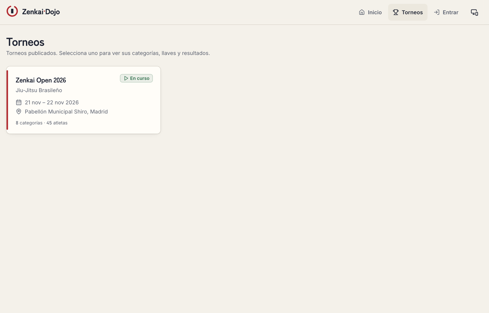
3.3 Ficha del torneo
Tiene tres pestañas:
Categorías: tarjetas con cinturón, género, peso, formato, número de atletas, tatami y hora. Puedes buscar por nombre y filtrar por cinturón. Pulsa una para abrir su llave.
Tatamis: un panel por tatami con el combate en curso (resaltado en verde) y los siguientes en cola.
Medallero: tabla de academias ordenada por puntos y, debajo, los podios de las categorías finalizadas.
Arriba a la derecha están Resultados PDF (medallero y podios) y Modo TV.
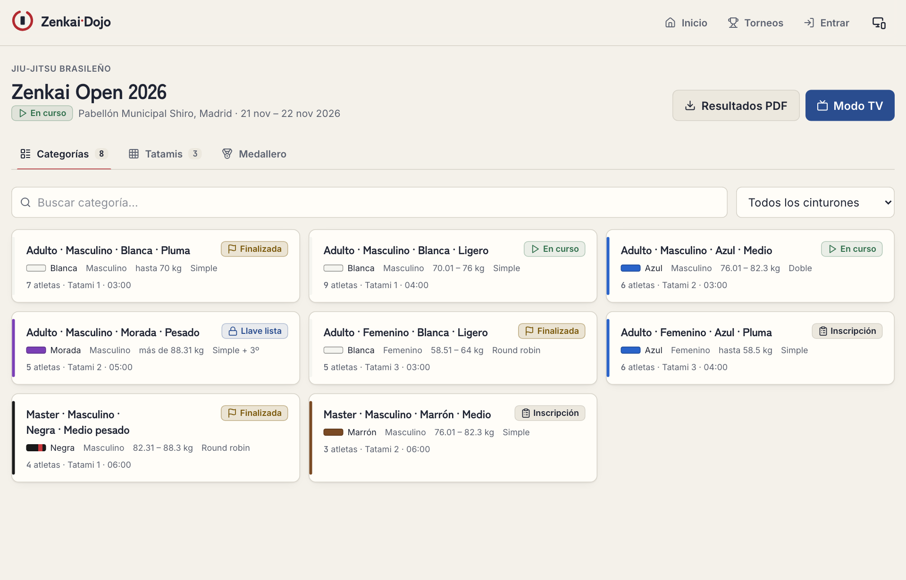
Pestaña Categorías con buscador y filtro por cinturón.
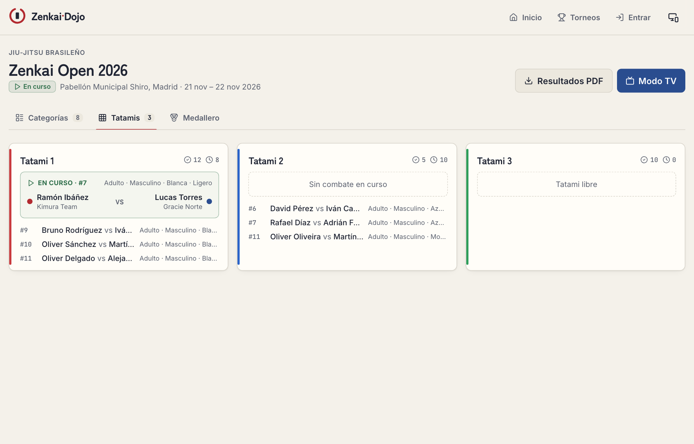
Pestaña Tatamis: combate en curso y cola de cada área.
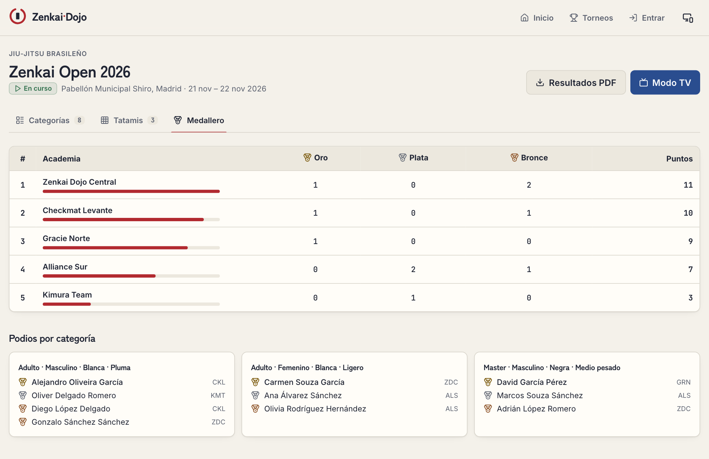
Pestaña Medallero: puntos por academia y podios.
3.4 Categoría y llave
La página de una categoría muestra, de arriba abajo: la cabecera (estado, cinturón, género, peso, formato y tatami), el botón Llave PDF, el podio cuando la categoría ha terminado, la llave y la lista de atletas inscritos.
Cómo leer la llave:
Cada caja es un combate. La franja de color indica la esquina: rojo arriba, azul abajo. Junto al nombre aparece la abreviatura de la academia y el cinturón.
El ganador aparece en negrita con el trofeo 🏆 y el perdedor tachado. Debajo de la caja se indica el método de victoria (Puntos, Sumisión…).
Una caja con borde discontinuo y «BYE» es un pase automático. «Por definir» significa que todavía no se conoce el rival.
Un combate en curso tiene borde verde y la etiqueta «En curso». La etiqueta «#7» es su número en la cola del tatami.
Las líneas doradas conectan los combates ya resueltos con el siguiente.
Dos vistas con los botones de la derecha: Gráfico (la llave dibujada) y Lista (los mismos combates como una lista por rondas, útil para leer rápido). En el ordenador la llave se ajusta sola al ancho; puedes arrastrar para moverla, hacer zoom con Ctrl + rueda (o pellizco en el trackpad) y con los botones + / −, y volver a encajarla con Ajustar a pantalla o doble clic.
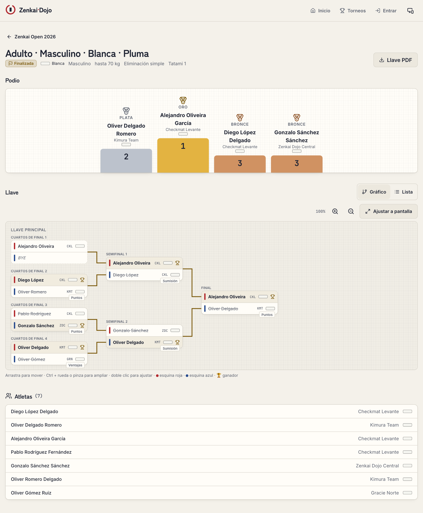
Categoría finalizada: podio y llave completa.
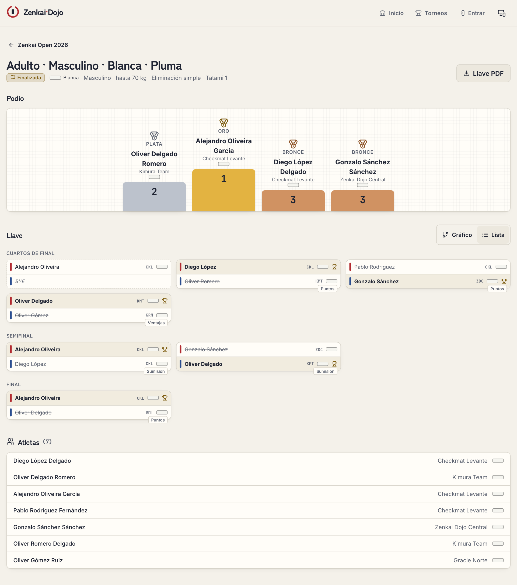
La misma llave en vista Lista.
En las categorías todos contra todos no hay llave sino una tabla de clasificación (victorias, derrotas, puntos por método y criterios de desempate) seguida de la lista de combates.
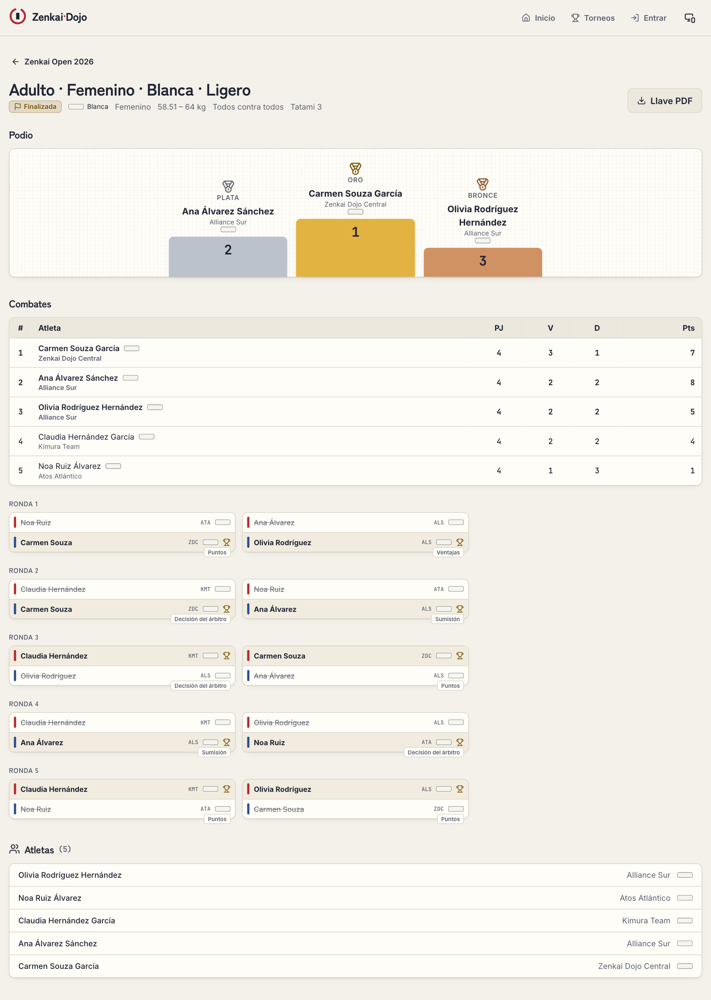
Categoría en formato todos contra todos.
3.5 La llave en el teléfono
En el móvil la llave se ve igual que en el ordenador, a un tamaño legible, con tres vistas:
Gráfico: la llave dibujada. Desliza con un dedo hacia los lados para avanzar de ronda en ronda; la página sigue haciendo scroll vertical con normalidad. Pellizca para ampliar o reducir y toca dos veces para volver al tamaño normal. El botón Ver completa encaja toda la llave en la pantalla (para tener una visión general) y Tamaño normal la devuelve al tamaño legible.
Vertical: las rondas de arriba abajo, con los combates emparejados y un texto que indica a qué combate pasan los ganadores. Solo scroll vertical.
Lista: los combates como lista.
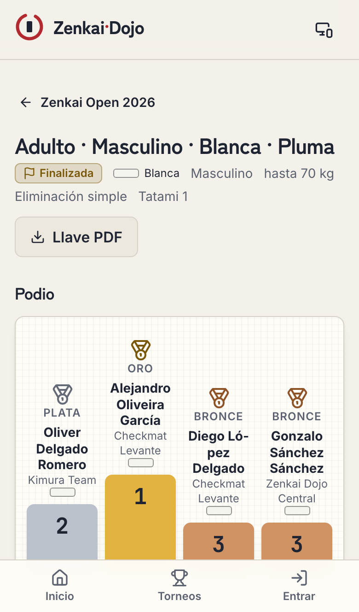
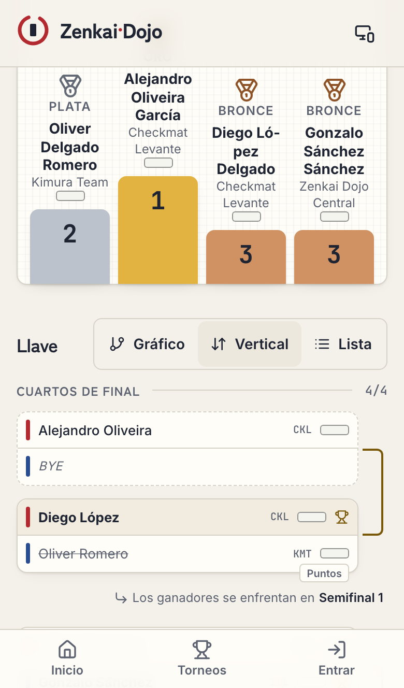
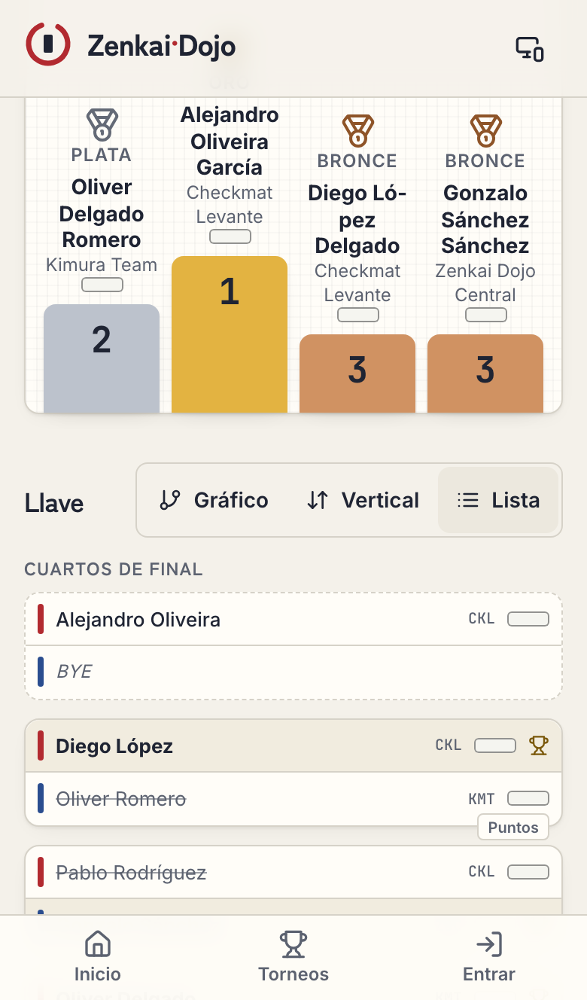
Las tres vistas de la llave en un teléfono: Gráfico, Vertical y Lista.
3.6 Modo TV
Pensado para proyectar en una pantalla grande del pabellón. Ver el capítulo 8.
4. Iniciar sesión
Pulsa Entrar (o «Acceso organización» en el inicio).
Escribe tu correo electrónico y tu contraseña y pulsa Entrar.
Según tu rol, la aplicación te lleva al Panel de administración o a la Mesa de control.
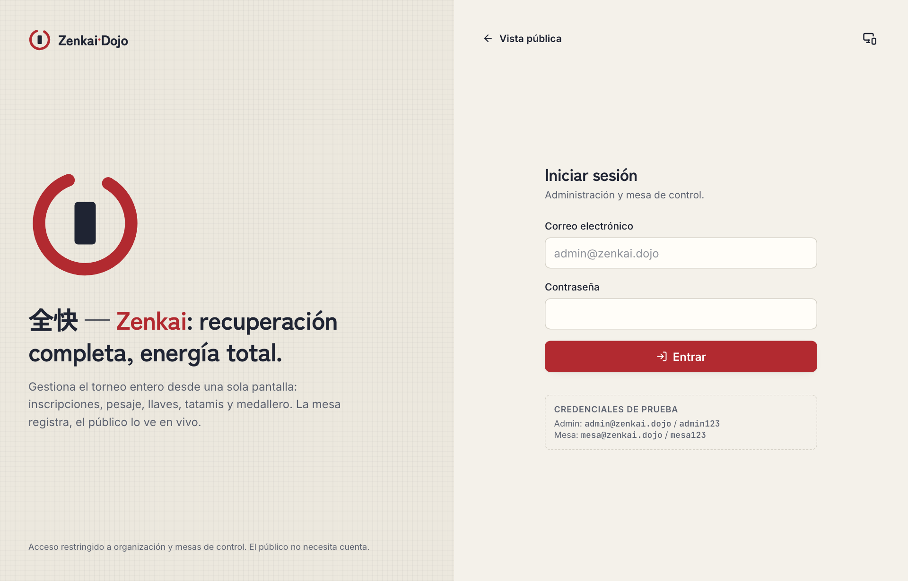
Inicio de sesión. En la instalación de pruebas se muestran las credenciales de demostración.
Si el correo o la contraseña no son correctos verás un aviso en rojo bajo el formulario.
La sesión dura 12 horas. Si un administrador desactiva tu usuario o cambia tu rol, el cambio se aplica de inmediato.
Para salir, usa el icono de cerrar sesión al pie de la barra lateral (o «Salir» en el menú ☰ del móvil).
Desde cualquier pantalla con sesión puedes ir a la Vista pública con el botón del mismo nombre; en la cabecera pública verás entonces un acceso rápido a tu Panel o Mesa.
5. Administración: preparar el sistema
Estas secciones del menú lateral son comunes a todos los torneos. Normalmente se configuran una vez y se reutilizan.
5.1 Panel de inicio
Resumen con el número de torneos, atletas, academias y deportes, una tarjeta «Cómo funciona» con los cuatro grandes pasos y la lista de torneos activos. El botón Nuevo torneo está siempre arriba a la derecha.
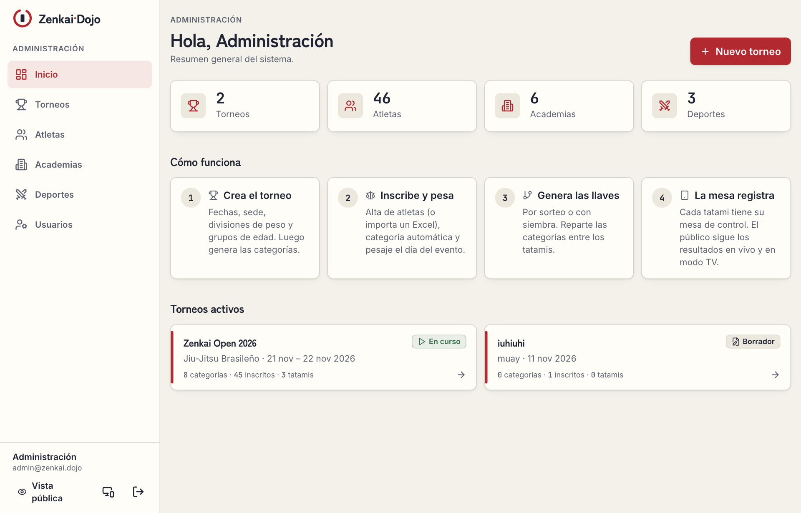
5.2 Deportes
Cada deporte define sus métodos de victoria (nombre, código y puntos, que se usan como desempate en todos contra todos), la duración por defecto del combate y los cinturones o niveles con su color (y una franja secundaria opcional, como la punta roja del cinturón negro).
Nuevo deporte abre el formulario. Con Añadir método y Añadir cinturón se agregan filas; el orden de los cinturones es el que se mostrará en los filtros.
Edita con el lápiz y elimina con la papelera (solo si ningún torneo lo usa).
5.3 Academias
Nombre, abreviatura (aparece en la llave junto al atleta), ciudad y color. Las academias que no existan se crean solas al importar atletas.
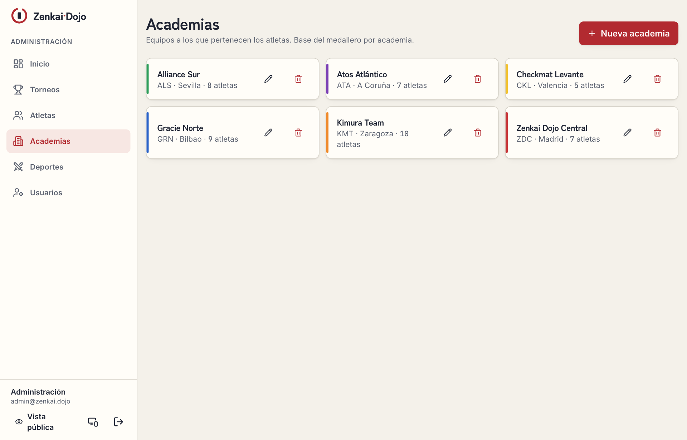
5.4 Usuarios
Aquí se crean las cuentas de administradores y de mesas de control.
Pulsa Nuevo usuario; indica nombre, correo, contraseña y rol.
Si el rol es Mesa de control, elige el torneo y marca los tatamis asignados. La mesa solo podrá operar esos tatamis (también puedes asignarlos después desde la pestaña Tatamis del torneo).
La casilla Usuario activo permite bloquear una cuenta sin borrarla.
Alta de un usuario de mesa con sus tatamis.
5.5 Atletas
Base de datos de competidores, compartida por todos los torneos. Busca por nombre, documento o academia.
Alta manual
Nuevo atleta: nombres, apellidos, documento (único: es la clave para no duplicar personas), fecha de nacimiento, género, cinturón, academia y, opcionalmente, correo y teléfono.
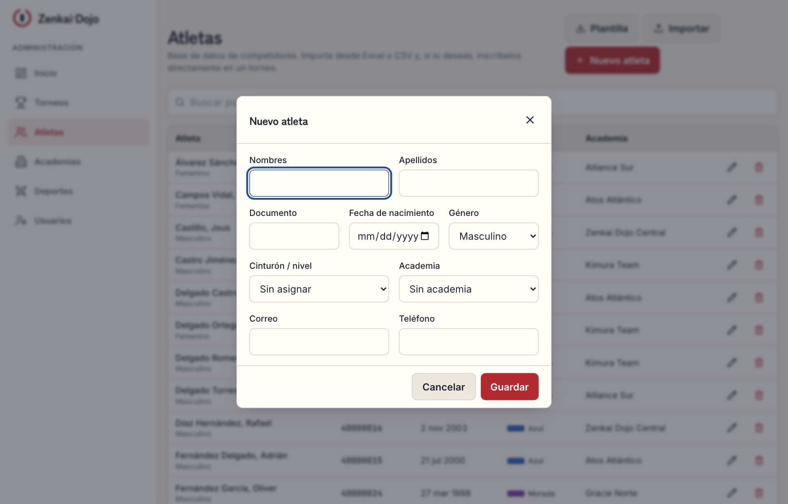
Importar desde Excel o CSV
Descarga la Plantilla (Excel) para ver las columnas esperadas, o usa tu propio archivo: las cabeceras se reconocen con flexibilidad (nombre/nombres, apellido/apellidos, documento/dni/cédula, fecha de nacimiento/nacimiento, género/sexo, cinturón/faixa, academia/equipo, peso/peso declarado, email/correo, teléfono), sin distinguir mayúsculas ni acentos.
Pulsa Importar y elige el archivo (.xlsx, .xls o .csv).
Revisa la vista previa: número de filas y columnas reconocidas. Elige el deporte (para interpretar los cinturones por su nombre) y, si quieres, el torneo en el que inscribirlos directamente.
Pulsa Importar N filas. Los atletas se crean o actualizan por documento, las academias nuevas se crean y, si elegiste torneo, se inscriben y se les asigna categoría automáticamente cuando solo hay una compatible.
Vista previa antes de confirmar la importación.
Formato de fecha recomendado: AAAA-MM-DD (por ejemplo 1998-04-12). Género: M, F o X. Si guardas el CSV desde Excel, elige la codificación «UTF-8» para que los acentos se lean bien.
6. Administración: el torneo paso a paso
6.1 Crear el torneo
En Torneos pulsa Nuevo torneo y rellena: nombre, deporte, sede, ciudad, fechas de inicio y fin, estado, descripción pública y los puntos del medallero (oro, plata, bronce).
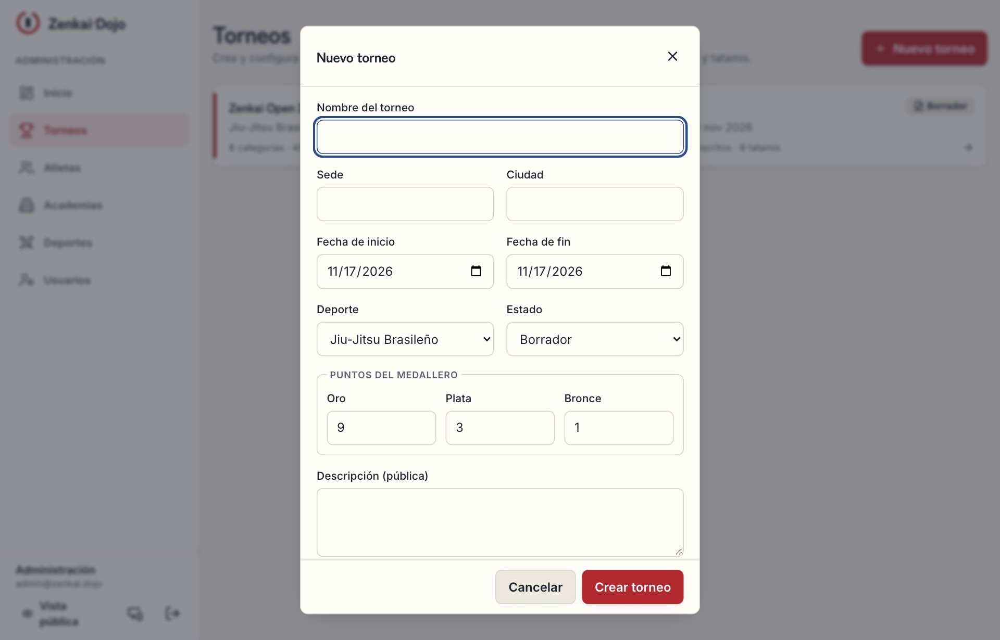
Estados del torneo: Borrador (invisible para el público), Inscripción, Pesaje, En curso (se activa solo con el primer combate) y Finalizado. Puedes cambiarlo cuando quieras desde Configuración.
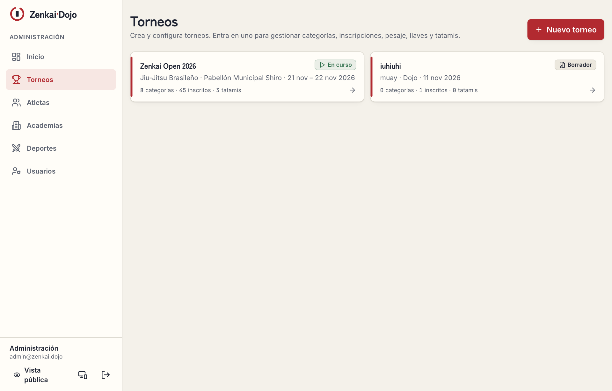
Lista de torneos. Pulsa uno para entrar en su gestión.
6.2 Resumen: tu guía de pasos
Al entrar en un torneo se abre la pestaña Resumen. Arriba, una tarjeta roja indica el siguiente paso pendiente y un botón te lleva a él. Debajo, los ocho pasos del torneo: los completados llevan una marca verde; cada uno muestra un dato útil (inscritos sin categoría, atletas sin pesar, llaves generadas…) y enlaza con su pestaña. También están Ver como público, Modo TV y los tatamis en vivo.
Bajo las pestañas hay siempre una línea de ayuda que explica qué se hace en esa pestaña y cuál es la siguiente.
6.3 Configuración
Tres bloques:
Datos del torneo: los mismos campos del alta. Guardar cambios al terminar.
Divisiones de peso: nombre (Pluma, Ligero…), mín. kg, máx. kg y género. Deja ambos kilos vacíos para una división absoluta. Una división con género fijo solo se combina con ese género al generar categorías.
Grupos de edad: nombre y edades desde / hasta.
Al final de la página está Eliminar torneo (pide confirmación; borra también sus categorías, inscripciones y resultados).
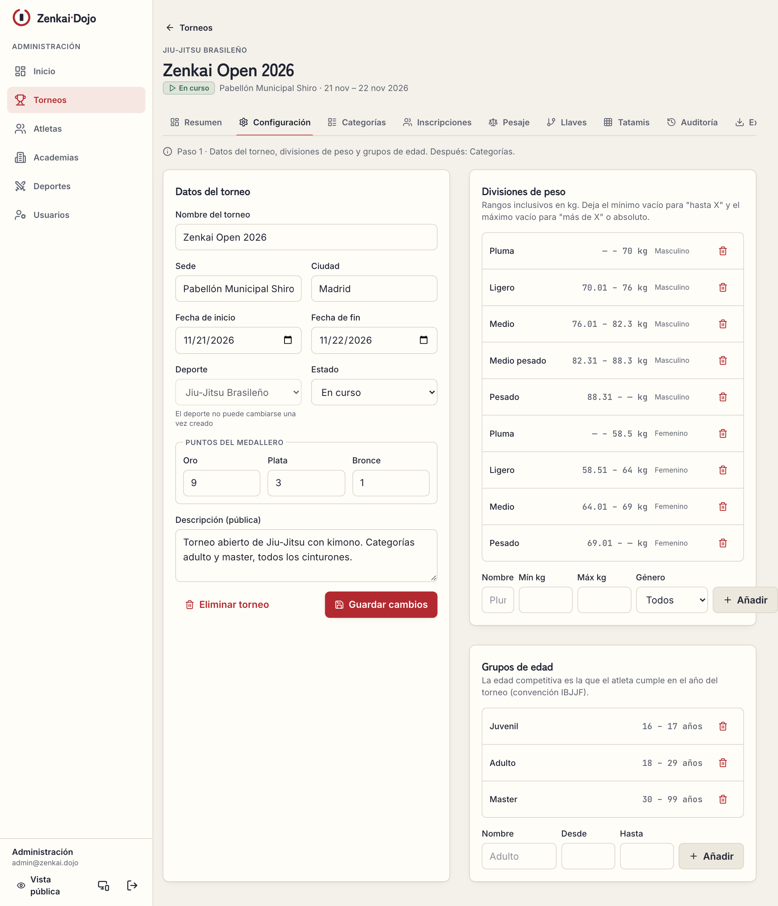
6.4 Categorías
Dos maneras de crearlas:
Nueva: una categoría a mano. Elige grupo de edad, género, cinturón, división de peso, formato de llave, tatami, duración del combate, criterios de desempate (para todos contra todos), si se evita la misma academia en primera ronda y, opcionalmente, un nombre propio.
Generación asistida: marca los grupos de edad, géneros, cinturones y divisiones que quieras combinar y el formato por defecto; el sistema crea una categoría por cada combinación (omitiendo las que ya existan). Después puedes editar las que necesites y usar Eliminar categorías vacías para quitar las que se queden sin inscritos.
Generación asistida: cada combinación marcada será una categoría.
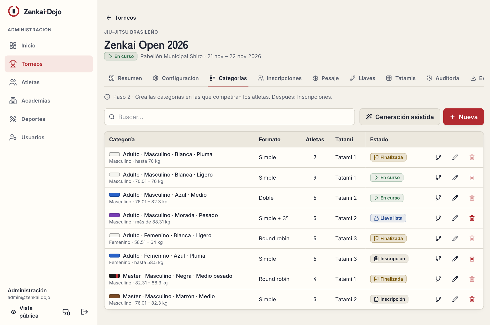
Tabla de categorías con estado, atletas y acciones (llave, editar, eliminar).
El formato, la división, el grupo de edad, el cinturón y el género solo se pueden cambiar mientras la categoría está en estado Inscripción (sin llave). Con llave generada puedes seguir cambiando nombre, tatami u hora.
6.5 Inscripciones
Lista de todos los inscritos del torneo con su categoría, peso declarado, siembra y estado del pesaje. Busca por atleta, documento o academia y filtra por categoría.
Pulsa Inscribir, busca al atleta por nombre o documento y selecciónalo (debe existir en Atletas).
Deja la categoría en Automática para que el sistema la asigne según edad, género, cinturón y peso declarado, o elige una de las categorías compatibles. Indica el peso declarado y la siembra si procede.
Si un atleta queda Sin categoría (porque hay varias compatibles o ninguna), edítalo con el lápiz y elige una. El botón Asignar automáticamente intenta resolver de golpe todos los que estén sin categoría.
Inscribir un atleta: búsqueda y categoría.
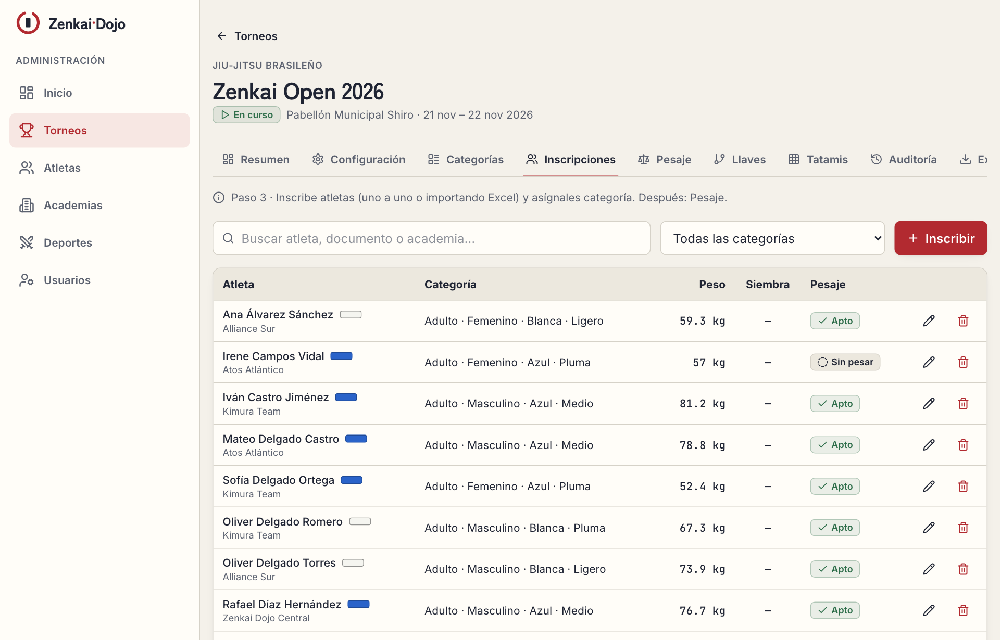
6.6 Pesaje
Filtra por estado (Sin pesar es el filtro útil el día del pesaje) o busca por nombre o documento.
Pulsa Pesar en la fila del atleta. Se abre un campo grande con el peso declarado precargado.
Escribe el peso real y pulsa Registrar.
Si el peso está dentro del rango de su categoría queda Apto. Si no, aparece un aviso de Sobrepeso o Bajo peso con botones para moverlo a una categoría compatible con su peso (mismo género, edad y cinturón, y todavía sin llave). Si no hay ninguna, el aviso lo indica.
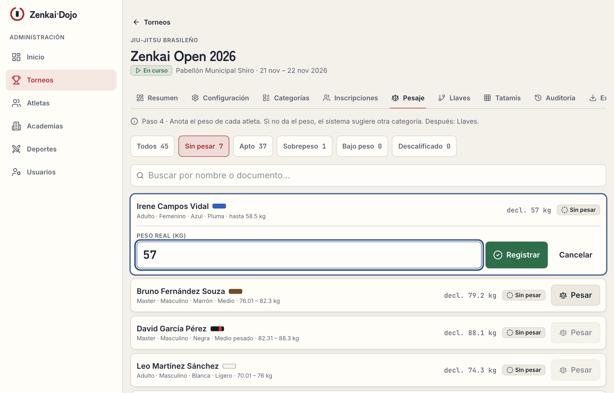
Registro del peso real de un atleta.
El botón Pesar se desactiva cuando la categoría del atleta ya tiene llave generada (elimina la llave primero si necesitas cambiar un peso).
Los atletas Descalificado no entran en la llave. Los que estén Sin pesar o fuera de peso sí entran, salvo que los muevas o los descalifiques; la pestaña Llaves lo avisa antes de generar.
6.7 Llaves
Elige la categoría en el desplegable. La tarjeta superior muestra formato, atletas aptos, tatami y avisos.
Generar la llave
Generar por sorteo: orden aleatorio.
Con siembra: respeta los números de siembra puestos en Inscripciones (1 contra el último, etc.); los BYE van a los mejores sembrados.
Evitar misma academia: con la casilla marcada, el sistema intenta que dos atletas de la misma academia no se crucen en la primera ronda.
Hacen falta al menos 2 atletas aptos. Mientras ningún combate haya empezado puedes Regenerar (se pide confirmación) o Eliminar la llave (la categoría vuelve a Inscripción).
Llave generada de una categoría en curso. El combate con borde verde está en el tatami ahora mismo.
Registrar o corregir un resultado desde la llave
Toca cualquier combate con los dos atletas definidos. Se abre Registrar resultado: primero ¿quién ganó? (rojo o azul) y después el método de victoria. Al pulsar el método se guarda. Si el combate ya tenía resultado, se trata como corrección: el administrador no necesita indicar motivo, pero el cambio queda en la auditoría y los combates posteriores afectados vuelven a pendiente automáticamente.
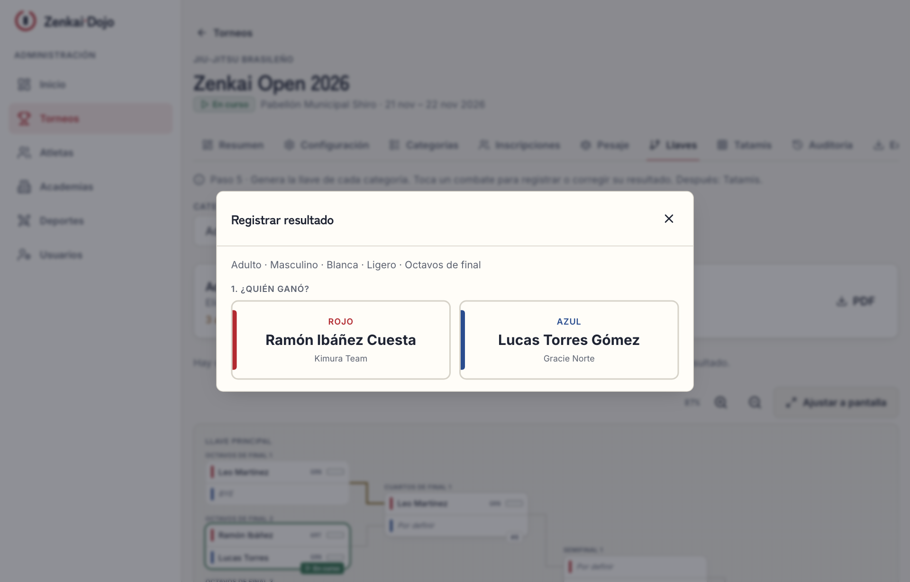
Paso 1 del registro: elegir ganador. Después se elige el método.
Debajo de la llave, el desplegable Anular un resultado permite devolver un combate a pendiente (también en cascada). Con PDF descargas la llave dibujada para imprimir.
6.8 Tatamis
Añadir los tatamis (escribe el nombre y pulsa Añadir). Cada tarjeta muestra su mesa, categorías programadas y número de combates.
Asignar mesa: elige qué usuarios de mesa operan ese tatami (deben existir en Usuarios con rol Mesa de control).
En Programación, asigna a cada categoría un tatami y una hora; ordena con las flechas ↑ ↓. Pulsa Guardar programación: la cola de combates de cada tatami (los números #1, #2…) se recalcula según la hora, el orden de la categoría y el orden de los combates.
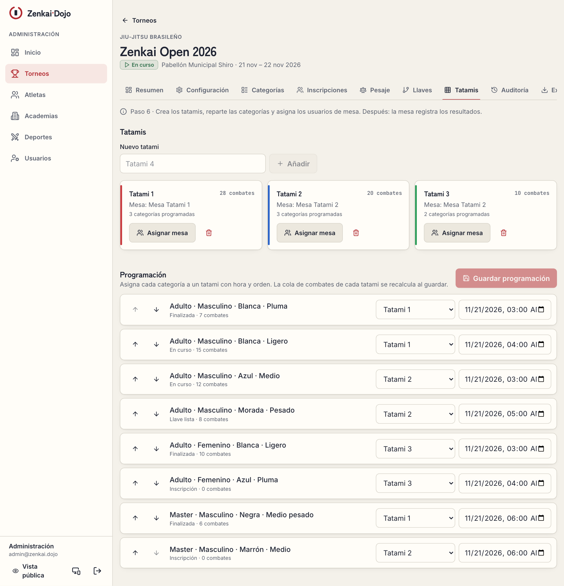
6.9 Auditoría
Tabla con los últimos 300 cambios de resultado: cuándo, quién, combate, estado antes y después, y motivo. Es de solo lectura y sirve para resolver cualquier reclamación.
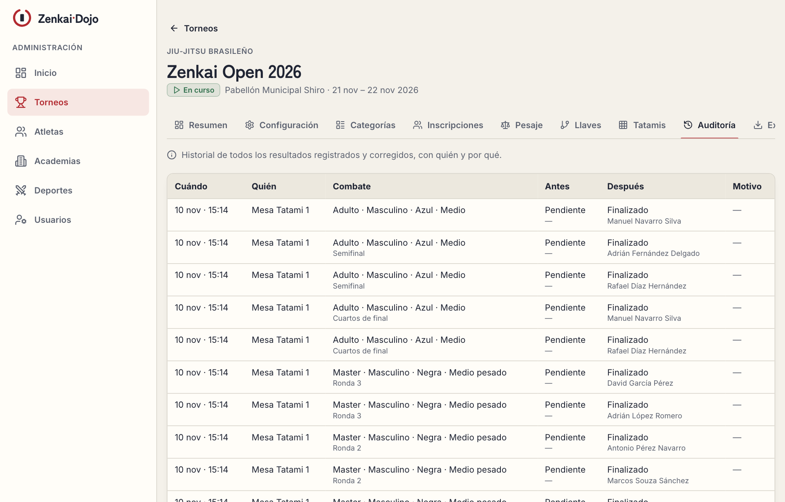
6.10 Exportar
Documento
Contenido
Acceso
Participantes por categoría (PDF)
Inscritos con academia, cinturón y resultado del pesaje.
Público
Horarios por tatami (PDF)
Programación de categorías en cada área.
Público
Resultados y medallero (PDF)
Medallero por academia y podios.
Público
Llave de una categoría (PDF)
La llave dibujada, con conectores y ganadores marcados. Elige la categoría en el desplegable.
Público
Libro Excel completo
Hojas Participantes, Categorías, Resultados, Medallero y Podios. Incluye documento, correo y teléfono.
Solo con sesión
Las horas del PDF de horarios se muestran en UTC; la web usa la hora local del navegador.
6.11 Administrar desde el móvil
Todas las pestañas funcionan en el teléfono: desliza la fila de pestañas hacia la izquierda para ver las demás. El menú lateral se abre con ☰. La barra inferior da acceso rápido a Inicio, Torneos, Atletas y Academias.
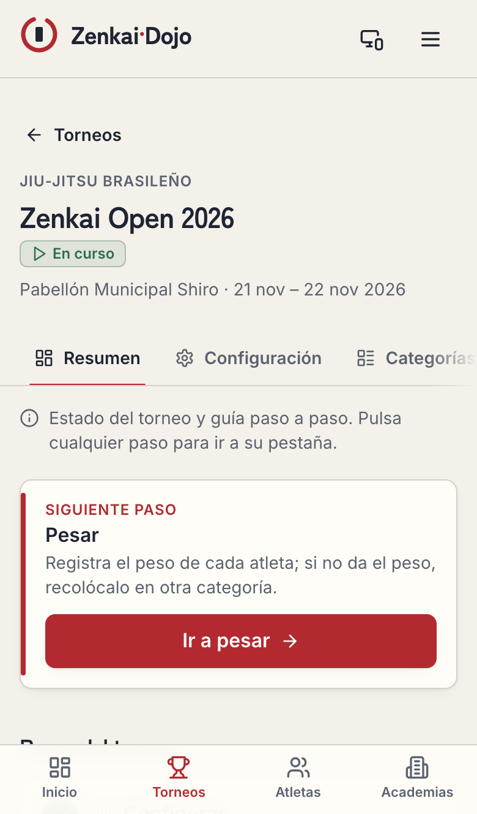
Resumen del torneo en un teléfono.
7. Mesa de control
La mesa está diseñada para una tablet junto al tatami, con botones grandes y una o dos pulsaciones por resultado. Un usuario con rol Mesa solo ve los tatamis que tiene asignados; un administrador puede operar cualquier tatami eligiendo primero el torneo.
7.1 Elegir el tatami
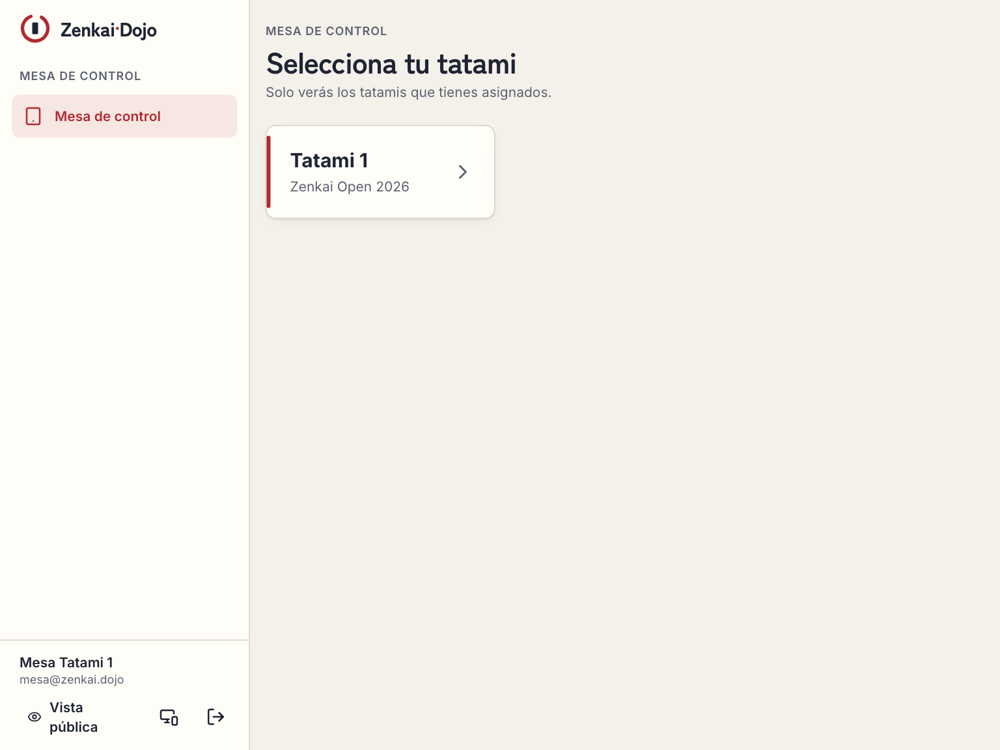
Al entrar, la mesa elige su tatami.
7.2 La consola del tatami
De arriba abajo: el combate en curso, los siguientes combates (listos, con ambos atletas) y, en gris con borde discontinuo, los que esperan rival. La cabecera resume cuántos hay listos, esperando y finalizados. La lista se actualiza sola cada pocos segundos.
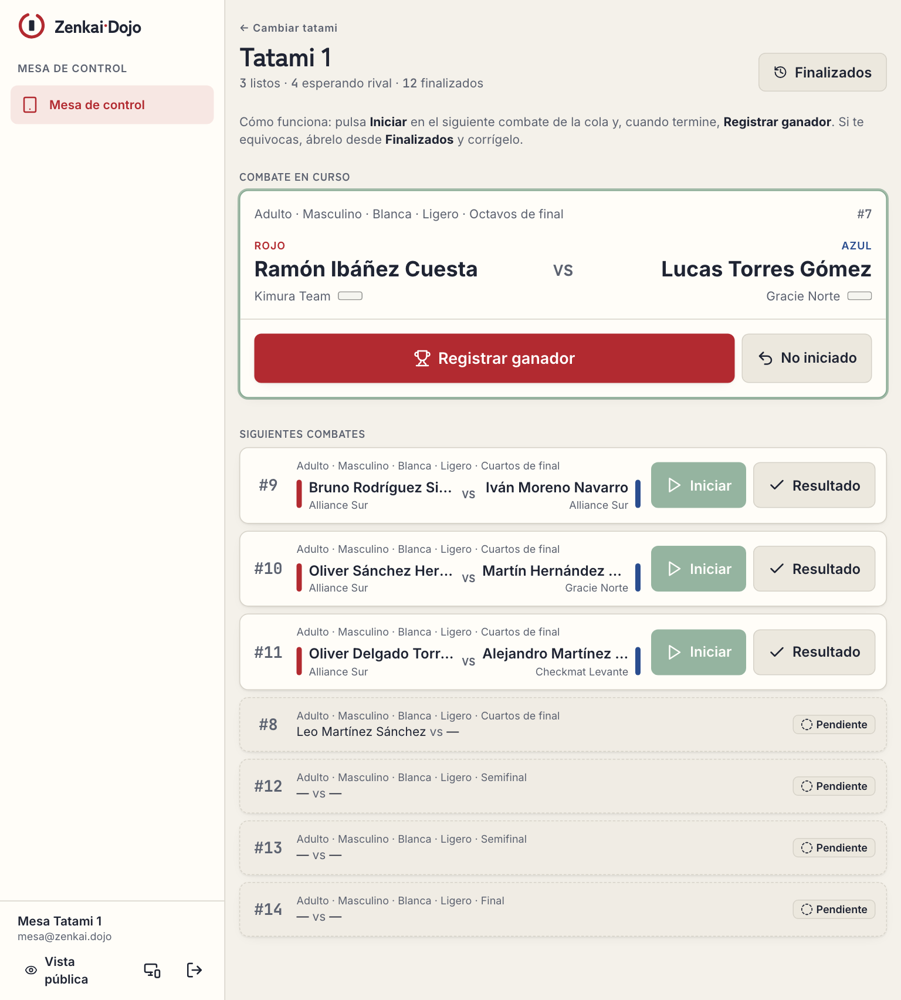
7.3 Registrar un combate (el caso normal)
Pulsa Iniciar en el primer combate de la cola. Pasa al bloque «Combate en curso» y se marca En curso en la llave pública y en el modo TV. Solo puede haber un combate en curso por tatami.
Cuando termine, pulsa Registrar ganador.
Toca la esquina ganadora (Rojo o Azul).
Toca el método de victoria. Se guarda al instante, el ganador avanza en la llave y el siguiente combate queda listo.
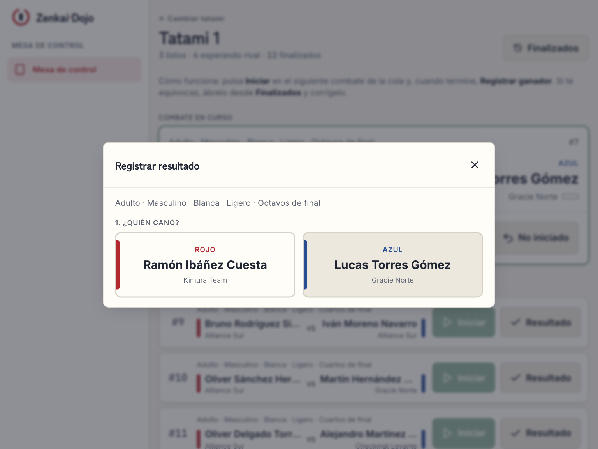
Registrar ganador: primero la esquina, después el método.
Resultado (el botón junto a Iniciar) registra un combate sin haberlo iniciado: útil si se te olvidó pulsar Iniciar o para resolver un combate ya disputado.
No iniciado devuelve el combate en curso a la cola si lo iniciaste por error.
7.4 Corregir un resultado
Pulsa Finalizados arriba a la derecha para mostrar los combates ya registrados.
Toca el combate equivocado.
Elige el ganador correcto, escribe el motivo de la corrección (obligatorio para la mesa) y toca el método.
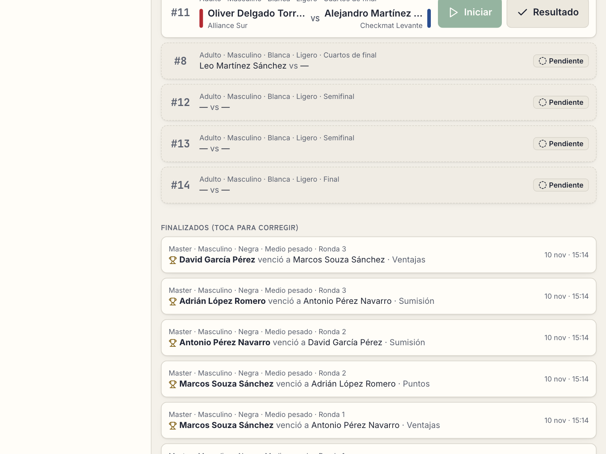
Lista de finalizados: toca uno para corregirlo.
Al corregir, los combates posteriores en los que participaba el ganador anterior vuelven automáticamente a pendiente y deberán registrarse de nuevo. Todo queda en la auditoría con tu nombre y el motivo.
8. Modo TV
Pantalla para proyectar en el pabellón, accesible desde la ficha del torneo, el inicio o el Resumen de administración (Modo TV). No requiere cuenta ni interacción:
Alterna automáticamente cada 20 segundos entre Tatamis en vivo (combate actual y cola de cada tatami) y Medallero, cuando ya hay medallas. Los puntos bajo el contenido indican qué pantalla se muestra.
Tipografía grande que se escala con el tamaño de la pantalla (legible desde lejos en un televisor o proyector).
Reloj en la cabecera, botón de pantalla completa y flecha para volver a la ficha del torneo.
Se actualiza sola cada pocos segundos.
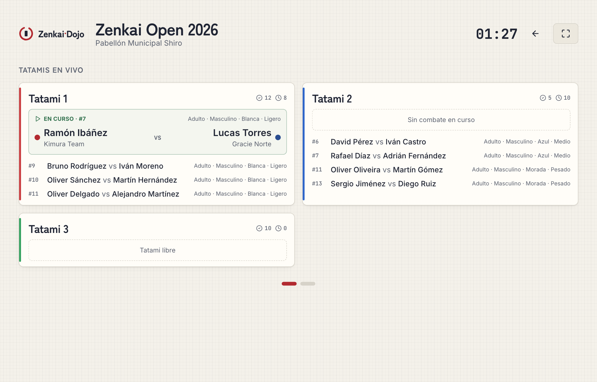
Modo TV mostrando los tatamis en vivo.
Consejo: abre el modo TV en un navegador en el ordenador conectado al proyector, pulsa el botón de pantalla completa y déjalo. Si la pantalla se apaga sola, desactiva el ahorro de energía del equipo.
9. Preguntas frecuentes y problemas habituales
El público no ve mi torneo
Está en estado Borrador. Cámbialo a Inscripción, Pesaje o En curso en Configuración.
No puedo cambiar el formato, el peso o el cinturón de una categoría
La categoría ya tiene llave. Elimina la llave en la pestaña Llaves (solo es posible si ningún combate ha empezado), cambia lo que necesites y vuelve a generarla.
No puedo regenerar ni eliminar la llave
Hay combates iniciados o finalizados. Anula primero sus resultados (desplegable «Anular un resultado» en Llaves) o corrígelos desde la propia llave.
Un atleta aparece «Sin categoría»
Había varias categorías compatibles (o ninguna) y el sistema no decide por ti. Edita la inscripción y elige la categoría, o pulsa Asignar automáticamente después de ajustar las categorías.
El atleta no da el peso
Al registrar el peso real aparecen botones para moverlo a una categoría compatible. Si no hay ninguna abierta, crea la categoría adecuada (o quítale la llave) y vuelve a pesar.
El botón «Pesar» está desactivado
La categoría del atleta ya tiene llave generada. Elimina la llave si realmente necesitas cambiar el peso.
La mesa no ve ningún tatami
Falta asignarle el tatami: en Usuarios (tatamis asignados) o en la pestaña Tatamis del torneo (Asignar mesa). Si el usuario está inactivo, actívalo.
El botón «Iniciar» está desactivado en la mesa
Ya hay un combate en curso en ese tatami. Regístralo o pulsa «No iniciado».
Me he equivocado de ganador
Mesa: pulsa Finalizados, toca el combate, elige el ganador correcto e indica el motivo. Administración: toca el combate en la llave o usa «Anular un resultado». Los combates posteriores afectados vuelven a pendiente.
La llave se ve muy pequeña o muy grande en el teléfono
Toca dos veces sobre la llave o pulsa Tamaño normal para volver a la escala legible; pellizca para ajustar; Ver completa muestra toda la llave de un vistazo. Si prefieres leer de arriba abajo, usa la vista Vertical o Lista.
La rueda del ratón no mueve la llave en el ordenador
Es a propósito: la rueda desplaza la página. Para hacer zoom usa Ctrl + rueda (o pellizco en el trackpad) o los botones + / −; para moverla, arrástrala.
No puedo descargar el Excel completo
Contiene datos personales, así que requiere haber iniciado sesión como administración. Los PDF sí son públicos.
Los acentos salen mal al importar un CSV
Guarda el archivo como «CSV UTF-8» (en Excel: Guardar como → CSV UTF-8) o usa directamente la plantilla Excel.
Aparece «Algo salió mal»
Pulsa Reintentar o Volver al inicio. Si se repite, anota la pantalla en la que ocurre y avisa al responsable técnico.
¿Cómo funciona el desempate en todos contra todos?
Según los criterios elegidos en la categoría, en orden: victorias, enfrentamiento directo, puntos por método de victoria (los puntos de cada método se definen en el deporte), menos derrotas y, en último caso, sorteo.
¿Y la eliminación doble?
Quien pierde en la llave principal pasa al repechaje. El ganador del repechaje se enfrenta al ganador de la llave principal en una gran final única (no hay segunda final). El bronce es para el perdedor de la final del repechaje.
10. Glosario de estados
Elemento
Estado
Significado
Torneo
Borrador
En preparación. Invisible para el público.
Inscripción
Publicado; se están inscribiendo atletas.
Pesaje
Día del pesaje.
En curso
Hay combates. Se activa solo con el primer combate iniciado.
Finalizado
Terminado. Se conserva todo para consulta y exportación.
Categoría
Inscripción
Sin llave; se pueden cambiar atletas y ajustes.
Llave lista
Llave generada, ningún combate empezado.
En curso
Al menos un combate iniciado o finalizado.
Finalizada
Todos los combates registrados; hay podio.
Pesaje
Sin pesar
Todavía no se ha registrado el peso real.
Apto
Dentro del rango de su división.
Sobrepeso / Bajo peso
Fuera del rango. Conviene moverlo a otra categoría.
Descalificado
Excluido de la llave.
Combate
Pendiente
Sin disputar (puede estar esperando rival).
En curso
Iniciado por la mesa; se muestra en verde.
Finalizado
Con ganador y método registrados.
BYE
Pase automático sin combate.
Zenkai Dojo · Manual de usuario · Las capturas pueden diferir ligeramente según la versión y el tema elegido.